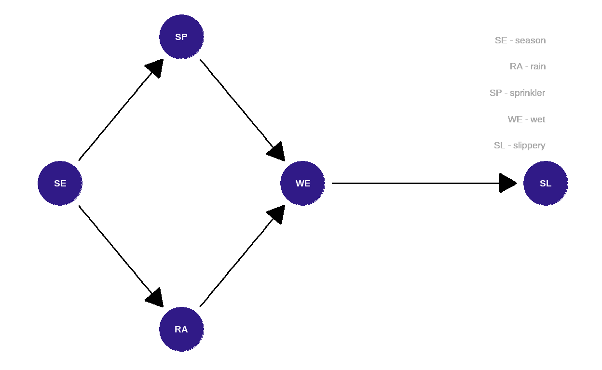
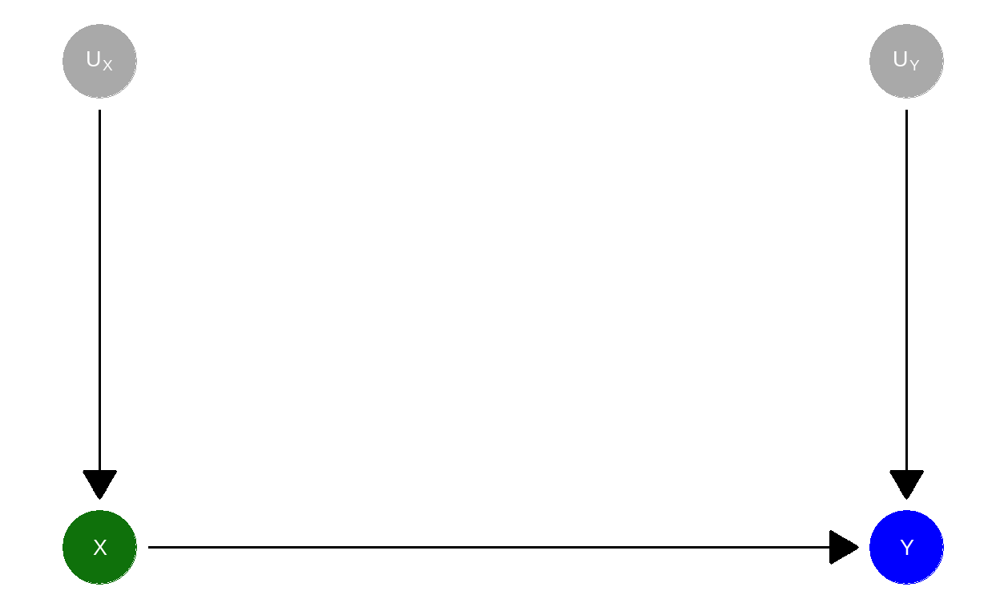

Learning objectives
In this module, you will learn:
what cause and effect mean;
the basic of causal graphs: the meaning of an arrow;
parents and children;
what a causal model is;
the difference between observing and doing in the context of causal inference.
Cause and effect
Humans have always been thinking about cause and effect – not just within philosophy, but also in everyday life:
If I take a pill, will the pain go away?
Does advertising increase sales?
Does it pay off to participate in a course?
We can either decide to take a pill, or decide against it – the pain will go away, or it won’t. Companies can invest more money into advertising, or less – sales will increase, or they will go down. You participate in the course or you don’t – your salary will increase, or it (unfortunately) won’t.
Thus, can observe all sorts of different values, such as “Yes” and “No” (taking the pill, pain reduction); \(0\) $ or \(1000\) $ (change in sales, in salary).
These values will occur with different probabilities, which we abbreviate to \(Pr\). \(Pr(\text{Pill})\) thus is the probability, that somebody takes a pill; \(Pr(\text{pain reduction})\) is the probability, that the pain disappears.
Pills and pain
Let’s see whether taking the pill helps!

Quelle: https://pixabay.com/illustrations/jar-pills-medicine-bottle-2338584/
Do you want to take the pill?
Choose one of the buttons. You can try multiple times to see what happens.
The properties we considered are, on an abstract level, variables. For example:
\(X\): Taking a pill, Yes or No.
\(Y\): Pain reduction, Yes or No.
The so-called distribution of a variables describes the probabilities, with which different values occur.
A variable \(X\) is called a cause of \(Y\), when the value of the effect \(Y\) is changed by \(X\), in other words \(Y\) depends on \(X\).
If you have tried both taking the pill and not taking it multiple times, you could observe that the pill often leads to a pain reduction, but not always. Furthermore, sometimes the pain went away even without pill.
Here are the underlying probabilities:
\(Pr(\text{Pain reduction when pill was taken})=0.8=80\%\)
and thus: \(Pr(\text{No pain reduction when pill was taken})=1-0.8=0.2=20\%\)\(Pr(\text{Pain reduction when no pill was taken})=0.4=40\%\)
an thus: \(Pr(\text{No pain reduction when no pill was taken})=1-0.4=0.6=60\%\)
We can also depict this in a probability tree diagram, here assuming that half of the people do take the pill:
Causal graphs
Alternatively, we could say that the distribution of \(Y\) (pain reduction) listens to \(X\) (taking the pill). We can visualize this in a very simple graph:

In such a graph, the variables
\(\color{green}{X} \rightarrow \color{blue}{Y}\) also means that the value of \(\color{green}{X}\) is not causally affected by \(\color{blue}{Y}\). Thus,

Quelle: https://pixabay.com/illustrations/switch-lightbulb-idea-inspiration-4539115/
Children and parents
Some people believe that children listen to their parents. The nice thing about the abstract world of causal graphs is that here this is indeed the case.
Variables (nodes), into which an arrow points, are called children of those variables, from which the arrows exist. Those variables are in turn called parents: \(\text{Parent} \rightarrow \text{Child}\). Above,
Here is another example: a causal graph that describes, how a road might end up slippery. The probability of rain depends on the season. The season also determines whether the sprinkler is switched on. Both rain and season can make the street wet. Once the street is wet, it may turn slippery:
## Warning: Removed 1 rows containing missing values (geom_dag_point).## Warning: Removed 4 rows containing missing values (geom_dag_text).## Warning: Removed 1 rows containing missing values (geom_dag_point).## Warning: Removed 4 rows containing missing values (geom_dag_text).
Quelle: Mohan und Pearl (2012)
Causal models
The causal model underlying the simple graph \(\color{green}{X} \rightarrow \color{blue}{Y}\) consists of two assignments:
- \(\color{green}{X} = U_{\color{green}{X}}\)
- \(\color{blue}{Y} = f_{\color{blue}{Y}}(\color{green}{X},U_{\color{blue}{Y}})\)
Where \(U_{\color{green}{X}}\) und \(U_{\color{blue}{Y}}\) are unknown causes (in statistics often called error) of \(\color{green}{X}\) and \(\color{blue}{Y}\), and \(f_{\color{blue}{Y}}(\color{green}{X},U_{\color{blue}{Y}})\) are the functions, the mechanism, through which \(\color{blue}{Y}\) is assigned a value based on \(\color{green}{X},U_{\color{blue}{Y}}\).
In the example \[\color{green}{\text{Pill}} \rightarrow \color{blue}{\text{Pain reduction}}\] \(U_{\color{green}{\text{Pill}}}\) contains the unknown (potentially random) reasons that lead somebody to take the pill (or not), and \(U_{\color{blue}{\text{Pain reduction}}}\) contains any unknown (potentially random) additional reasons why the pain may go away, with or without taking the pill.
Here, we will assume that \(U_{\color{green}{X}}\) and \(U_{\color{blue}{Y}}\) are completely independent of each other.
These so-called errors can be added to the graph, but they are often omitted to avoid crowding of the graph.

Let us assume you flip a coin (ux()) to determine whether you will take the pill or not, and the following applies to pain reduction (fy()):
\(Pr(\text{Pain reduction, if pill was taken})=0.8\)
\(Pr(\text{No pain reduction, if pill was taken})=1-0.8=0.2\)
\(Pr(\text{Pain reduction, if no pill was taken})=0.4\)
\(Pr(\text{No pain reduction, if no pill was taken})=1-0.4=0.6\)
Let us simulate this situation multiple times by pressing Run Code and observe which value the variables take on:
x <- U_X()
cat("Pill? ", x, "\n")
y <- f_Y(x)
cat("Pain reduction? ", y, "\n")# Here is the R code of the underlying functions:
U_X <- function() sample(c("Yes", "No"),1)
f_Y <- function(x) ifelse(x == "Yes",
sample(c("Yes", "No"), 1, prob = c(0.8, 0.2)),
sample(c("Yes", "No"), 1, prob = c(0.4, 0.6)))Observation
If \(100\) people flip a coin to determine whether they will take the pill or not, we expect on average that \(50\) will take the pill (green) and of these, \(50 \times 0.8 = 40\) will experience a pain reduction (). The other \(50-40=10\) won’t (). Of the \(50\) who do not take the pill (grey), \(50 \times 0.4 = 20\) will experience a pain reduction () and the remaining \(50-20=30\) won’t ():

All in all, we expect that on average \(40 + 20 = 60\) of \(100\) people experience a pain reduction, as long as \(U_{\color{green}{\text{Pill}}}\) is randomly Yes or No with \(Pr(\color{green}{\text{Pill}})=0.5\) ist.
We only observe which value the cause \(\color{green}{X}\) takes on.
Interventions
During an intervention, we act and actually do something. The causal model no longer says:
\[\color{green}{X} = U_{\color{green}{X}}\] but instead, for example – if we force everyone to take the pill:
\[\color{green}{X} = 1\]
with \(\color{green}{X} = \cases{1: \quad \text{Pill} \\ 0: \quad \text{No pill}}\).
To formalize the difference between observation and intervention, there is a distinct operator to indicate on operation: \(do(\cdot)\) (englisch: to do sth., etwas machen). For example, to say that we force everybody to take the pill, we can write \(do(\color{green}{X} = 1)\).
Reverse causality
If the suspected cause is in reality the effect, and conversely if the suspected effect is in reality the cause, we encounter the problem of reverse causality. We assume \(A \rightarrow B\), but in reality \(B \rightarrow A\).
We differentiate between cause and effect on the basis of substantive, theoretical considerations. Time can help to determine what is going on (cause precedes effect), and so can experiments (Module 8). Both are part of the Bradford-Hill-criteria for causality:
- Strength: causality is more plausible if the association is strong (e.g., high correlation coefficient) and statistically significant.
- Consistency: causality is more plausible when the association is found repeatedly.
- Specificity: causality is more plausible if there are no alternative explanations.
- Temporality: causality is more plausible if the effect comes after the cause.
- Gradient: causality is more plausible, when a larger value of the cause is associated with a larger value of the effect.
- Plausibility: causality is more plausible, when there is a substantively plausible mechanism connecting cause and effect.
- Coherence: causality is more plausible, if it is aligned with known facts and theories.
- Experiment: causality is more plausible if there is experimental evidence.
- Analogy: causality is more plausible, if there are known similar pairs of cause and effect.
Outlook
Causal inference helps us to investigate differences in the distribution of the effect \(\color{blue}{Y}\), depending on whether \(\color{green}{X}\) was simply observed or actually determined by an intervention (\(do(\color{green}{X})\)).
This causal ladder is part of the next module.
Quelle: https://pixabay.com/vectors/good-girls-cloud-star-ladder-2204244/
Note
This course was supported by a grant from the German Federal Ministry of Education and Research, grant number 16DHBQP040.